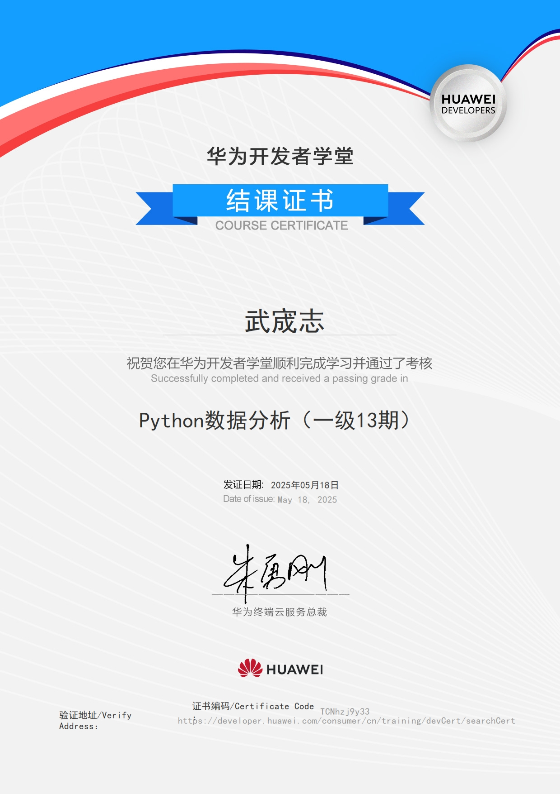
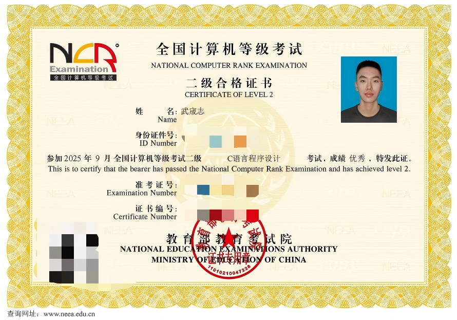
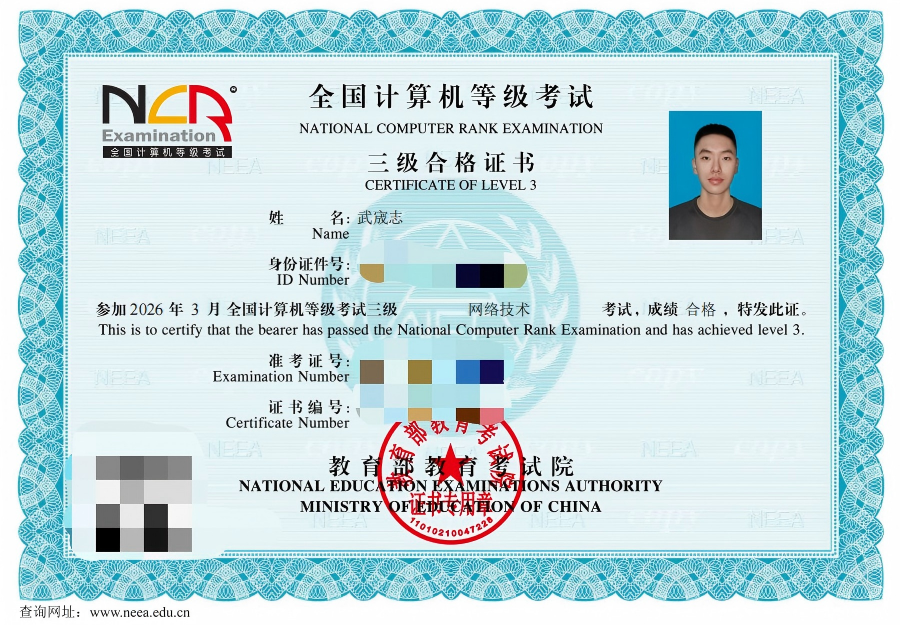

研究习惯
关注 A 股、美股和全球资本市场动态，重视从公告、财报和研报中建立事实基础，再形成自己的研究框架。
Personal Portfolio · Internship Profile
投资研究、资本市场与科技产业方向
Finance student exploring investment research, capital markets, and technology-driven industries.
我关注国际金融、资本市场、AI 与半导体行业研究，希望将金融分析框架、数据处理工具和 AI 辅助研究方法结合起来，支持更高效的资料整理、市场跟踪和研究表达。
About Me / 关于我
我希望把金融理论学习、市场观察和数据工具结合起来，逐步形成面向投资研究岗位的基础能力。
我目前就读于首都经济贸易大学金融学（国际金融英文班）专业。相比单纯学习理论，我更希望把课堂上的金融知识和真实市场结合起来，因此平时会关注 A 股、美股和全球资本市场动态，也会阅读上市公司公告、财务报告和券商研究报告。
在工具层面，我正在强化 Python 数据分析、Excel 数据整理、PowerPoint 展示和 AI 工具辅助研究能力。我的目标是在实习中承担资料搜集、数据整理、行业跟踪、基础建模和报告撰写等工作，用更清晰的逻辑理解市场，用更高效的工具支持研究判断。
关注 A 股、美股和全球资本市场动态，重视从公告、财报和研报中建立事实基础，再形成自己的研究框架。
能够使用 Excel 做数据清洗和整理，使用 Python 进行基础数据分析，并尝试用 AI 工具提升资料归纳和代码实现效率。
希望进入投资研究、资本市场或科技行业研究相关岗位，在真实项目中提升行业理解、逻辑表达和专业交付能力。
Beyond Research
Beyond coursework and research, I value discipline, teamwork, and observing the world directly.
Education / 教育背景
金融学（国际金融英文班） · 大二
Capital University of Economics and Business · Finance · Sophomore重点学习金融市场、国际金融、投资分析及相关数据工具。
Skills / 技能
Practical skills for data processing, report writing, and AI-assisted research.
Projects / 项目经历
Selected academic and self-directed projects related to investment research and technology learning.
以全球成长精选类 QDII 基金为研究对象，从资产配置、行业配置、重仓股、基金经理投资框架和风险收益特征等角度进行分析，尝试理解基金产品背后的投资逻辑。
Investment Strategy Research持续关注 A 股、美股及全球资本市场动态，阅读上市公司公告、财务报告和券商研究报告，训练从公开信息中提取行业变化、公司经营状况和市场预期的能力。
Capital Market Tracking正在学习使用 Codex、Python 和网页开发工具搭建个人网站与简单 Demo，熟悉从需求定义、代码生成、本地运行到页面优化的完整流程，并探索 AI 工具在金融研究中的应用。
AI Agent PrototypeCertificates / 证书
Credentials that reflect programming foundation, network technology, and Python data analysis learning.



Contact / 联系方式
Open to internship opportunities in investment research, capital markets, and technology industry analysis.
欢迎通过以下邮箱联系我。
Please feel free to reach out for internship and research opportunities.
Resume / 简历
The resume is attached at the end of this website for quick review and download.
点击下方按钮可以在新标签页查看简历，或下载 PDF 文件。